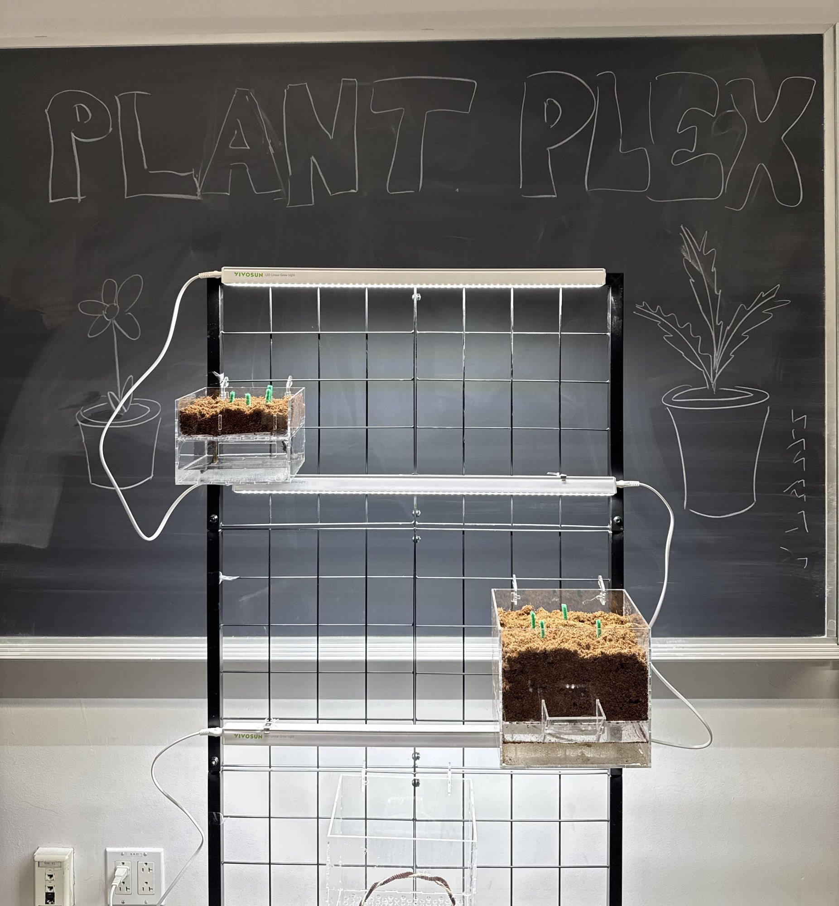
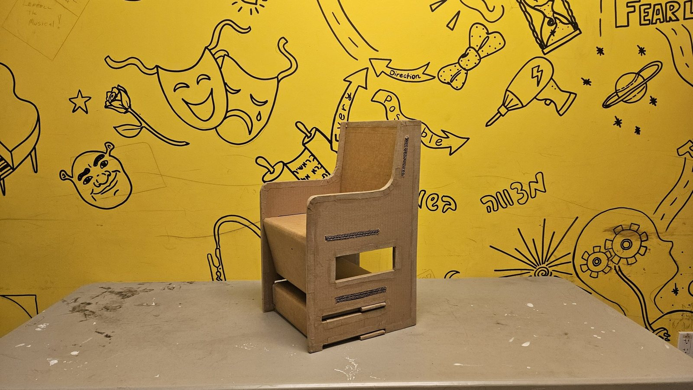
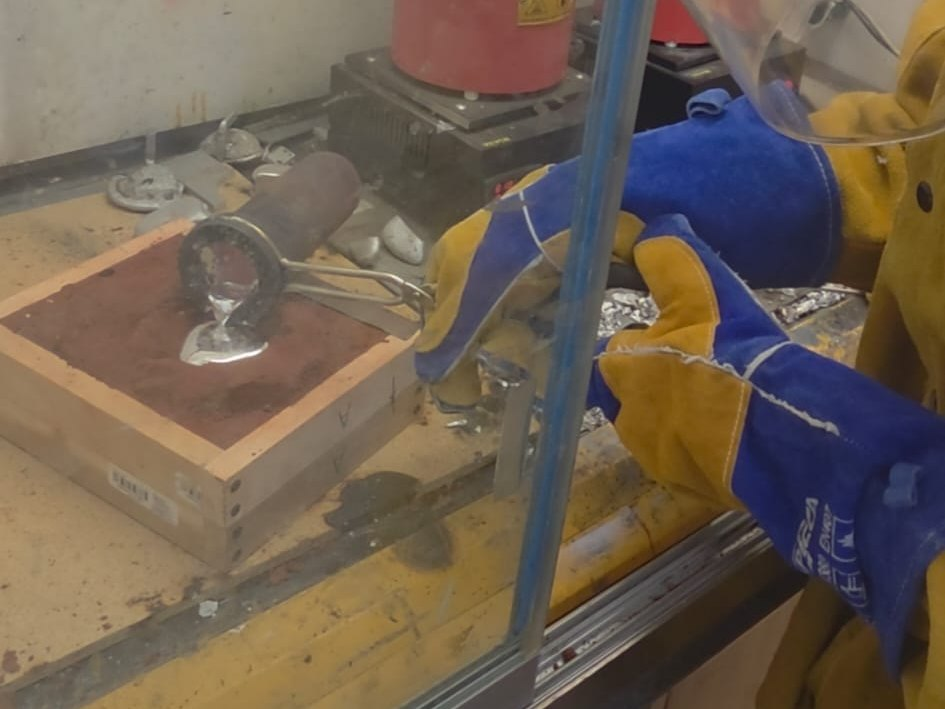

Engineering portfolio
Rio Ben-Yehoshua
Mechanical engineering student at The Cooper Union in New York City, graduating May 2029. Looking for a Summer 2027 internship in mechanical design, controls and mechatronics.
About
I’m a sophomore studying mechanical engineering. I like designing and building systems that actually work: build it, test it, see where it fails, and fix it. I’m most interested in controls and mechatronics, where mechanical design meets sensors, motors and code.
English and Hebrew (fluent), Chinese (conversational).
Skills
Projects in this portfolio

110 passes in 60 s · 1st in class
Ping Pong Recirculation System
Autonomous launch-and-recover machine. Page 2.

0.84% full-scale error
Digital Load Cell Scale
Four load cells, HX711, Arduino. Page 3.

72 h self-watering · 0 pumps
PlantPlex
Self-watering indoor farming grid. Page 4.
● In progress · since Oct 2026
Gesture-controlled drone swarm
With a professor: Crazyflie nano-drones that follow a person’s gestures, flying physics models such as orbits and a mass-spring system. So far: calibrated the drones and Lighthouse positioning; Python (cflib).
● In progress · since Spring 2026
Cooper Union Motorsports (FSAE)
Body Cockpit Safety team. Designed a pedal box chassis mount in SolidWorks, evaluated driver harness ergonomics, and reviewed FSAE rules to select floor closeout, firewall and insulation materials.
Workshop builds

Custom cardboard chair for a preschooler
For a child with cerebral palsy who often fell out of his seat. Triwall cardboard with laser-cut sides, arm supports, a sliding foot stool and a storage shelf.

Sand casting a dog-bone specimen
Sand cast 6061 aluminum, tensile tested to failure on an Instron. Peak force 8.90 kN; fractured at about 1.9% strain.